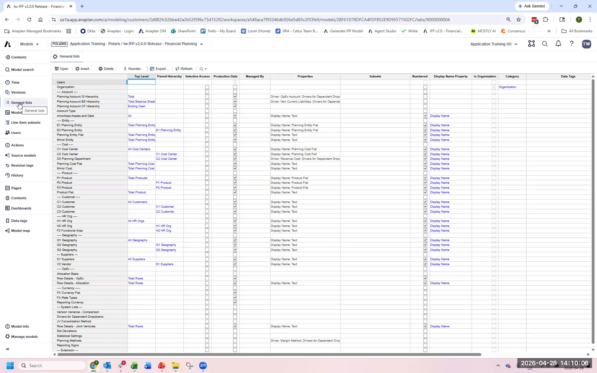
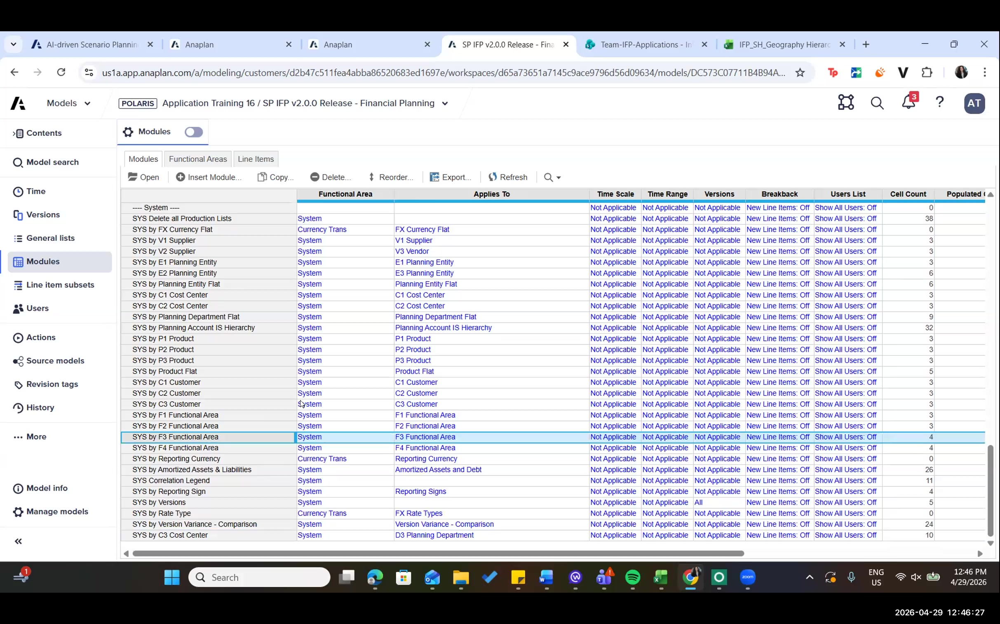
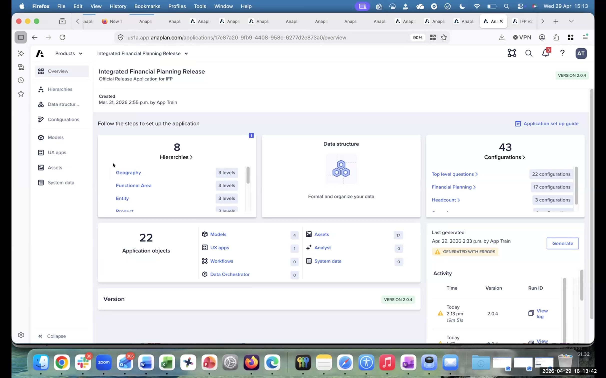

IFP Overview
What IFP 2.0 is, what changed, and how the App Framework works
What IFP Is
Integrated Financial Planning (IFP) is Anaplan's pre-built application for P&L, balance sheet, and headcount planning. It provides a structured, configurator-driven approach to financial planning that eliminates months of model-building time and gives partner consultants a repeatable delivery framework.
Version 2.0 is a significant re-architecture from prior versions. The headline change is the introduction of the Application Framework — a configurator-driven model generation system that replaces manual model setup. IFP 2.0 also introduced Anaplan Data Orchestrator (ADO) integration and Headcount Planning 2.0.
What's New in IFP 2.0
| Capability | What It Is | Why It Matters |
|---|---|---|
| App Framework | Configurator-driven generation — answer questions, generate a model | Eliminates weeks of manual module setup; standardizes delivery |
| ADO Integration | Anaplan Data Orchestrator built-in for data loading | Replaces manual import actions with orchestrated data pipelines |
| Headcount Planning 2.0 | Rebuilt HC module with IFP integration | HC data flows directly into expense planning without manual mapping |
| Extensive Re-Architecting | Module naming, list structures, formula patterns all standardized | Easier to maintain, extend, and hand off between consultants |
Module Architecture
IFP 2.0 generates a consistent module naming convention across all four models. Understanding this architecture is essential for error log troubleshooting and extension work.
| Prefix | Module Type | Purpose |
|---|---|---|
| ADMIN | Administration | Configuration settings, planning method mapping, user access |
| SYS | System | Cross-model system lists, hierarchy mappings, Boolean controls |
| DAT | Data | Actuals data staging, integrations from ADO and Headcount model |
| INP | Input | Planning input modules — where users enter forecast data |
| CALC | Calculation | Aggregation, allocation, derived calculations from INP modules |
| OUT | Output | Consolidated output modules — feed downstream reports and dashboards |
The App Framework Concept
The App Framework is the configuration and generation engine. The workflow is:
Configure
Answer all configuration questions in the App Framework configurator. These define hierarchy levels, dimensions, planning methods, and scope.
Generate
Trigger generation. The App Framework reads your answers and provisions all four IFP models (Financial Planning, Headcount, Admin, Data Orchestrator). This takes 10–20 minutes.
Review
Inspect the generated model and error logs. 'Generated with errors' is normal and expected — it does not mean the model is broken.
Extend
Add customer-specific extensions on top of the generated base model. Document everything you change.
Every IFP 2.0 generation in a training or early-stage environment produces errors. These are formula errors caused by configuration choices, hierarchy renaming, or geography differences from the base model template. The model is functional. You will learn to read and resolve these errors in the Error Log Review section.
IFP Hierarchy Lists

SYS Modules After Generation

App Framework Overview
